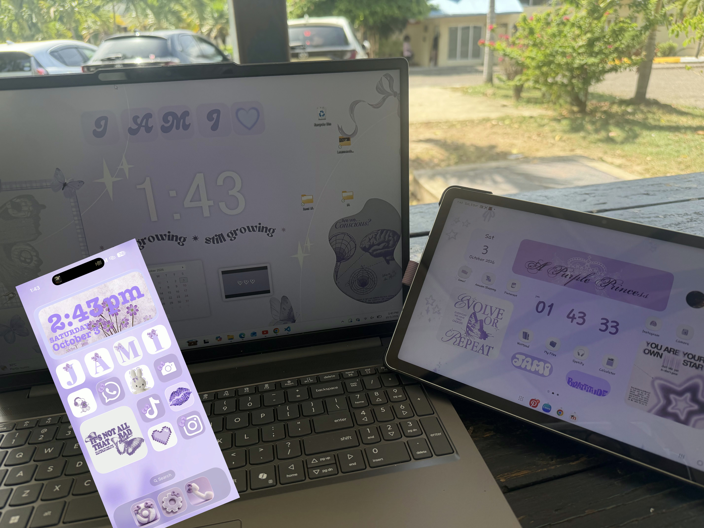
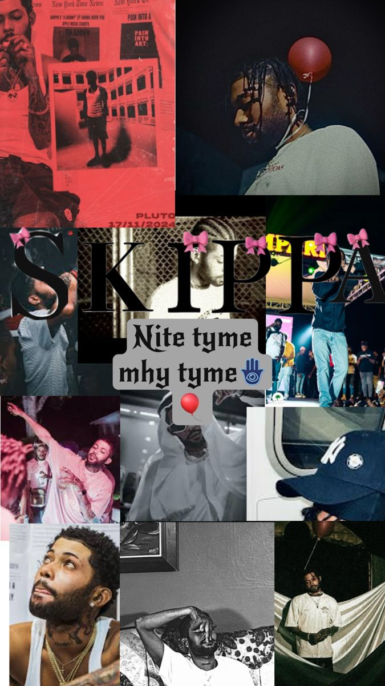

Who Is Jamelia?
Top 3 Traits

AESTHETIC
I've always been an aesthetic person—drawn to color, texture and beautiful spaces. This shapes my academic life as I study best in visually calm environments and enjoy formatting notes and assignments until they look just right. Sometimes that eye for detail slows me down but it also makes me more observant and deliberate in my work.
A READER
I've always loved reading,getting lost in stories, ideas and new perspectives. It shapes my academic life by making me a faster, more curious learner. I read widely beyond my assignments, retain more from textbooks and find writing easier because I've absorbed so many styles. Sometimes I get so absorbed in a book that I put off other work, but overall reading keeps me engaged and makes studying feel less like a chore.
DIGITAL LEISURE
I spend a lot of my free time scrolling TikTok, watching short videos and letting the algorithm feed me whatever it thinks I'll like. It shapes my academic life in mixed ways, the quick, punchy format makes it hard to focus on long readings and I often reach for my phone when I should be studying. But it also keeps me curious, up-to-date on what's happening in the world and plugged into trends, sometimes I even find study tips or explainers that actually help. Overall, it's a constant temptation but managing it makes it a tool rather than a distraction.
Quote
Skippa once said:
"Tell 'em seh fi go get di money and nuh stop
Di Benz dem haffi burp and di Bimma haffi fat
Mi tell yuh seh fi work and nuh be no copycat
Mi mek it from di dirt, now mi chillin' at di top"
-Currency by Skippa
Who is Skippa?
Skippa Don is a Jamaican dancehall artist. He is known for his energetic performances and catchy songs. He has a large following on social media and is considered one of the rising stars in the dancehall scene. Skippa's music often features themes of success, ambition and overcoming obstacles.

What Does This Quote Mean?
He's saying keep chasing money and don't stop, because he was able to afford expensive cars and that can be the reward for the grind. He's telling me not to be a follower,
but to go forth, putting the work in and build my own path instead of copying others or waiting for handouts. He came from being at the bottom and now he's at the top,
so his whole message is about staying focused, working hard and never forgetting where he came from while pushing himself and his people from struggle to success. Skippa
uses his platform to inspire others to pursue their dreams and never give up in explaining this short snippet I hope to show you why he is my hero. He is ambitous and wants the best for his fans.
~Signed a Skippa-holic
Essay
LLM as a Tool not A Crutch- Student Perspective
When I first read that large language models (LLMs) such as ChatGPT, Claude and Copilot "must be used as a tool not a crutch", I understood it as a warning about agency rather than technology. The question is not whether I use these systems, since surveys show that around 98% of university students already use ChatGPT for academic tasks (Saputra et al., 2025). The question is who is doing the thinking.A tool extends my capability while leaving the intellectual work in my hands as a crutch substitutes for my capability and quietly takes the work away.
Philosophers of education capture the crutch problem precisely, overreliance severs the connection between local goals such as solving a specific problem and global goals, such as acquiring the general skill the task was meant to build (Dung & Balg, n.d.). The crutch lets me pass through my degree while leaving the graduate behind. This is why UNESCO's guidance insists that generative AI should serve human capability rather than replace it ("Guidance for", n.d. ; "Guidance for", 2023) and why Kasneci and colleagues argue that students need new literacies to understand the technology and its "unexpected brittleness". With a strong focus on critical thinking and fact-checking (Kasneci et al., 2023), the statement is not anti-AI instead it's pro-student.
The mechanism behind the crutch is cognitive offloading, meaning the delegation of cognitive processing to an external system (Wei & Zhang, 2025). In pre-registered experiments, students who substituted their learning with an LLM, for example by having it generate solutions covered more topics but understood each one less, while students who complemented their learning by asking for explanations deepened their understanding (Lehmann et al., 2024). A review of 67 studies found that unstructured ChatGPT use often triggered offloading and declines in critical and creative thinking, with benefits appearing only in scaffolded designs (Li et al., 2026). Overuse is also linked to weaker academic writing and psychological dependency (Aziz et al., 2026).
The crutch is seductive because it is invisible from the outside. Analyses of real student conversations found that heavy offloading clusters in creative tasks such as drafting arguments or code appears more often among high-achieving students (Piatnitckaia et al., 2026). In programming courses, AI-assisted tasks produced short-term gains of 20 to 40% yet transferred only weakly to unaided problem-solving (Vivian, 2025). The model can also mislead, one graduate case study found that ChatGPT's references were fabricated (Garg et al., 2025). The crutch does not just weaken me but it can actively mislead me while making me feel more capable as if I know what I'm doing while I really don’t.
When do I use LLMs? Only after I have attempted the thinking myself, a quasi-experimental study found a negative correlation between ChatGPT use and critical thinking that reversed into improvement once students received structured guidance (Kani, 2024), and a "crutch-coach" review of the literature shows that ‘process first’ designs such as Socratic questioning and verification prompts strengthen epistemic vigilance while ‘answer first’ use breeds overreliance (toha & Bernroider, 2026).
Where do I use them? In the legitimate zones, orientation before reading the primary literature, explanation of difficult concepts, feedback on my drafts, brainstorming positions I must then argue against and code review where I understand every line before accepting it. These uses match what the literature identifies as supportive, provided the output is verified and I remain the analyst (Quyen, 2026 ; Sullivan et al., 2023). The illegitimate zones are equally clear as anything I submit as my own unaided thought, anything that bypasses the struggle a task was designed to create and anything my institution prohibits, because AI content should boost learning rather than replace it (Finkel-Gates, 2025).
How do I use them? Through three practices. First, verification, every claim and citation gets checked against a primary source since hallucinations are documented model-level risks (Kasneci et al., 2023 ; Delikoura et al., 2025).Second, dialogue, I prompt the model to question me rather than hand me finished text, which is an approach shown to improve student's confidence in asking insightful questions and analysing information (Guo & Lee, 2023). Finally,disclosure, I keep building the AI literacy that systematic reviews identify as decisive , I also declare my AI use where required (in the case of UTech that would be through the AI declaration form) (Abdallah et al., 2024 ; Kasneci et al., 2023).
Ultimately the statement means keeping the connection between effort and learning intact. LLMs are extraordinary at removing strandedness, the state of being stuck at 2 a.m. with no one to help and even leveling the educational playing field when used to comprehend, aggregate and critique (Steele, 2022). But they are equally good at removing the productive struggle that turns a student into a graduate, and no detector or policy will protect me from that, only my habits will. My rule is simple, the LLM may question me, explain to me and argue with me, but it should not think for me, sed that way, ChatGPT, Claude and Copilot stop being a crutch and instead become an extension of my own mind.
References
Aziz, B., Zehra, S. L., & Shafiq, M. H. (2026). Over-reliance on ChatGPT and its psychological impact on critical thinking and writing skills among university students. ACADEMIA International Journal for Social Sciences, 5(2), 31–44. https://doi.org/10.63056/academia.5.2.2026.1508
Dung, L., & Balg, D. (2025). Learning alone: Language models, overreliance, and the goals of education. PhilArchive. https://philarchive.org/rec/DUNLAL-3
Finkel-Gates, A. (2025). ChatGPT in academic assessments: Upholding integrity. Journal of Learning Development in Higher Education, (36). https://doi.org/10.47408/jldhe.vi36.1491
Guo, Y., & Lee, D. (2023). Leveraging ChatGPT for enhancing critical thinking skills. Journal of Chemical Education, 100(12), 4876–4883. https://doi.org/10.1021/acs.jchemed.3c00505
Kani, A. (2024). Investigating the impact of ChatGPT use on students’ critical thinking skills [Master's thesis, Nazarbayev University]. Nazarbayev University Repository. https://nur.nu.edu.kz/items/b3f800c9-a837-46ca-beef-57acd77fcad9
Kasneci, E., Sessler, K., Küchemann, S., Bannert, M., Dementieva, D., Fischer, F., Gasser, U., Groh, G., Günnemann, S., Hüllermeier, E., Krusche, S., Kutyniok, G., Michaeli, T., Nerdel, C., Pfeiffer, M., Poquet, O., Sailer, M., Schmidt, A., Seidel, T., & Kasneci, G. (2023). ChatGPT for good? On opportunities and challenges of large language models for education. Learning and Individual Differences, 103, 102274. https://doi.org/10.1016/j.lindif.2023.102274
Lehmann, M., Cornelius, P. B., & Sting, F. J. (2024). AI meets the classroom: When does ChatGPT harm learning? arXiv. https://doi.org/10.48550/arXiv.2409.09047
Li, C., Cui, H., & Hagedorn, L. S. (2026). The cognitive impact of ChatGPT in higher education: A systematic review of critical and creative thinking outcomes. Computers and Education: Artificial Intelligence, 10, 100571. https://doi.org/10.1016/j.caeai.2026.100571
Namoun, A., Ibrahim, I. A., Mustafa, E., Alrehaili, A., Tufail, A., Shuja, J., Bilal, K., & Alanazi, M. H. (2024). Generative artificial intelligence in education: An umbrella review of applications and challenges. Research Square. https://doi.org/10.21203/rs.3.rs-4892155/v2
Piatnitckaia, L., Corneloup, V., Bühler, B., Terzimehić, N., Kasneci, E., & Zenasni, F. (2026). Patterns of student cognitive offloading to AI in higher education. OSF Preprints. https://doi.org/10.31234/osf.io/tu5pb_v1
Saputra, N., Asirah, A., & Syafitri, S. E. (2025). Integrating ChatGPT in higher education: Insights into student usage, critical thinking, and independent learning. International Journal of Education, Language, and Religion, 7(1), 91–102. https://doi.org/10.35308/ijelr.v7i1.11928
Sullivan, M., Kelly, A., & McLaughlan, P. (2023). ChatGPT in higher education: Considerations for academic integrity and student learning. Journal of Applied Learning & Teaching, 6(1), 1–10. https://doi.org/10.37074/jalt.2023.6.1.17
Toha, M. A., & Bernroider, E. W. N. (2026). Cognitive crutch or cognitive coach? A systematic literature review on generative AI and critical thinking in higher education. In Proceedings of the International Conference on Information Resources Management (CONF-IRM 2026). Association for Information Systems.
UNESCO. (2023). Guidance for generative AI in education and research. UNESCO. https://unesdoc.unesco.org/ark:/48223/pf0000386693
Vivian, R. (2025). Coding with ChatGPT: Empirical evidence of cognitive offloading in computer science education. Clareus Scientific Science and Engineering, 2(10). https://doi.org/10.70012/CSSE.02.062
Delikoura, I., Fung, Y. R., & Hui, P. (2025). From superficial outputs to superficial learning: Risks of large language models in education. https://doi.org/10.48550/arXiv.2509.21972